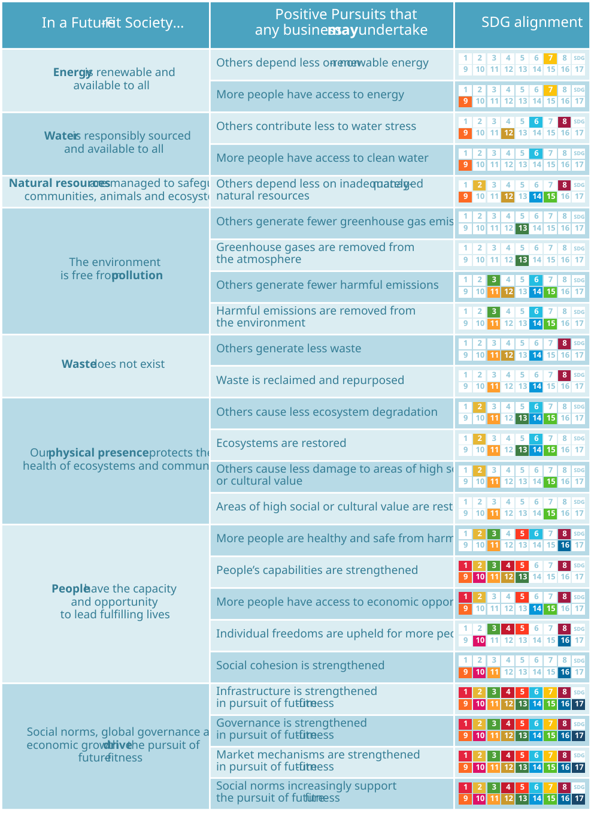

7. Positives Streben
Abbildung 7.1: Die zukunftsfitten positiven Bestrebungen.

7.1 Energie
In einer zukunftsfähigen Gesellschaft ist Energie erneuerbar und für alle verfügbar.
PP01: Andere sind weniger auf nicht erneuerbare Energien angewiesen
Um die Break-Even-Ziele zu erreichen, muss jedes Unternehmen seine eigene Abhängigkeit von nicht erneuerbaren Energien beseitigen. Hier betrachten wir Maßnahmen, die darüber hinausgehen.
Diese positive Verfolgung gilt, wenn – als Ergebnis der Maßnahmen des Unternehmens:
- Es steht mehr erneuerbare Energie zur Verfügung, um nicht erneuerbare Alternativen zu ersetzen. oder
- Andere können ihren Bedarf mit weniger Energie decken.
PP02: Mehr Menschen haben Zugang zu Energie
Viele Unternehmen tragen Waren und Dienstleistungen zum globalen Energiesystem bei, aber das bedeutet nicht unbedingt, dass sie den Fortschritt der Gesellschaft in Richtung Zukunftsfähigkeit beschleunigen: Das Schlüsselproblem hierbei ist der Zugang.
Diese positive Verfolgung gilt, wenn – als Ergebnis der Maßnahmen des Unternehmens:
- Bisher unterversorgte Menschen erhalten zuverlässigen und erschwinglichen Zugang zu sauberen Kochmöglichkeiten und Strom.6
Hinweis: In einer zukunftsfähigen Gesellschaft hat jeder Zugang zu erneuerbarer Energie. Wenn jedoch Menschen Energie zur Verfügung gestellt wird, die zuvor keine Energie hatten, wird ein großes Hindernis für ihr Wohlbefinden beseitigt, selbst wenn diese Energie aus nicht erneuerbaren Quellen stammt. Dies ist ein wichtiges Ergebnis, das anerkannt werden sollte – obwohl man anerkennen muss, dass es sich um einen nicht ganz perfekten Zwischenschritt hin zum uneingeschränkten Zugang zu erneuerbarer Energie handelt. Beachten Sie außerdem, dass, wenn ein Unternehmen durch die Bereitstellung eines solchen Zugangs zu Energie mehr Treibhausgasemissionen erzeugt oder seine Kunden dazu veranlasst, diese Nebenwirkungen als negative Beiträge zu den Break-Even-Zielen erfasst werden, die sich auf betriebliche und produktbedingte Treibhausgase konzentrieren Emissionen bzw.
7.2 Wasser
In einer zukunftsfähigen Gesellschaft wird Wasser verantwortungsvoll beschafft und steht allen zur Verfügung.
PP03: Andere tragen weniger zum Wasserstress bei
Um die Break-Even-Ziele zu erreichen, muss jedes Unternehmen seinen eigenen Beitrag zur Wasserknappheit beseitigen. Hier betrachten wir Maßnahmen, die darüber hinausgehen.
Diese positive Verfolgung gilt, wenn – als Ergebnis der Maßnahmen des Unternehmens:
- Es wird mehr sauberes Wasser zur Verfügung gestellt, ohne dass sich die Wasserknappheit verschlimmert. oder
- Andere können ihren Bedarf mit weniger Wasser decken.
PP04: Mehr Menschen haben Zugang zu sauberem Wasser
Viele Unternehmen tragen mit Gütern und Dienstleistungen zum globalen Wassersystem bei, aber das bedeutet nicht unbedingt, dass sie den Fortschritt der Gesellschaft auf dem Weg zur Zukunftsfähigkeit beschleunigen: Das Schlüsselproblem hierbei ist der Zugang.
Diese positive Verfolgung gilt, wenn – als Ergebnis der Maßnahmen des Unternehmens:
- Bisher unterversorgte Menschen erhalten Zugang zu sauberem und zuverlässigem Süßwasser.7
7.3 Natürliche Ressourcen
In einer zukunftsfähigen Gesellschaft werden natürliche Ressourcen verwaltet, um Gemeinschaften, Tiere und Ökosysteme zu schützen
PP05: Andere sind weniger auf unzureichend bewirtschaftete natürliche Ressourcen angewiesen
Jedes Unternehmen muss sicherstellen, dass mit den selbst gewonnenen natürlichen Ressourcen verantwortungsvoll umgegangen wird, um die Break-Even-Ziele zu erreichen. Hier betrachten wir Maßnahmen, die darüber hinausgehen.
Diese positive Verfolgung gilt, wenn – als Ergebnis der Maßnahmen des Unternehmens:
- Es werden verantwortungsvoller bewirtschaftete natürliche Ressourcen produziert, um die Menge zu erhöhen, die anderen zur Verfügung steht.
- Eine natürliche Ressource, die auf störende Weise produziert wurde, wird in eine verantwortungsvolle Bewirtschaftung umgewandelt.
- Weniger Güter und Dienstleistungen stammen aus gefährdeter oder bedrohter Flora und Fauna; oder
- Um den gleichen Bedarf zu decken, sind weniger natürliche Ressourcen erforderlich.
Hinweis: Im Gegensatz zu Energie und Wasser stellen natürliche Ressourcen in ihrer Rohform kein Grundbedürfnis dar, da ein relativ kleiner Teil der Menschen direkten Zugang zu ihnen benötigt. Aus diesem Grund gibt es keine Kategorie „Positive Pursuit“, die sich speziell auf den Zugang zu natürlichen Ressourcen bezieht. Es ist jedoch wichtig zu bedenken, dass alle sozioökonomischen Akteure auf Güter und Dienstleistungen angewiesen sind, die letztendlich aus natürlichen Ressourcen stammen. Wenn also ein Unternehmen ein neues Produkt anbieten würde, das nur verantwortungsvoll bewirtschaftete natürliche Ressourcen beinhaltet – um Marktalternativen zu verdrängen, die unzureichend bewirtschaftete Ressourcen beinhalten –, wäre das Ergebnis von dieser positiven Verfolgung abgedeckt (in diesem Fall wären "Andere" die Kunden). des verbesserten Produkts).
7.4 Umweltverschmutzung
In einer zukunftsfähigen Gesellschaft ist die Umwelt frei von Schadstoffen.
PP06: Andere verursachen weniger Treibhausgasemissionen
Um die Break-Even-Ziele zu erreichen, muss jedes Unternehmen seine eigenen Treibhausgasemissionen sowie alle durch seine Produkte als Folge ihrer Nutzung verursachten Treibhausgasemissionen eliminieren. Hier betrachten wir Maßnahmen, die darüber hinausgehen.
Diese positive Verfolgung gilt, wenn – als Ergebnis der Maßnahmen des Unternehmens:
- Eine Aktivität wird geändert, um die gleichen Ergebnisse mit geringeren Treibhausgasemissionen zu erzielen.
- Eine Aktivität wird durch eine andere ersetzt, die zu keinen Treibhausgasemissionen führt; oder
- Treibhausgase werden vor der Emission abgefangen und entweder so genutzt oder gespeichert, dass eine spätere Emission verhindert wird.
PP07: Treibhausgase werden aus der Atmosphäre entfernt
Treibhausgase werden durch natürliche Prozesse der Kohlenstoffbindung und -speicherung kontinuierlich aus der Atmosphäre entfernt. Insbesondere Bäume, Pflanzen und Algen nehmen bei der Photosynthese Kohlendioxid aus der Luft auf und wandeln es in andere Kohlenstoffverbindungen um. Diese landen in Biomasse – etwa Baumstämmen, Ästen und Wurzeln – und Böden, die als natürliche Kohlenstoffsenken dienen.
Diese positive Verfolgung gilt, wenn – als Ergebnis der Maßnahmen des Unternehmens:
- Natürliche Kohlenstoffsenken werden gepflanzt, angebaut oder auf andere Weise geschaffen;
- Bestehende natürliche Kohlenstoffsenken werden verbessert, um mehr Kohlenstoff aufzunehmen und zu speichern. oder
- Treibhausgase werden mit technischen Mitteln aus der Atmosphäre entfernt und entweder so genutzt oder gespeichert, dass künftige Emissionen vermieden werden.
PP08: Andere verursachen weniger schädliche Emissionen
Jedes Unternehmen muss seine eigenen schädlichen Emissionen eliminieren, um die Break-Even-Ziele zu erreichen. Hier betrachten wir Maßnahmen, die darüber hinausgehen.
Diese positive Verfolgung gilt, wenn – als Ergebnis der Maßnahmen des Unternehmens:
- Eine Aktivität wird so geändert, dass sie die gleichen Ergebnisse mit weniger schädlichen Emissionen liefert. oder
- Eine Tätigkeit wird durch eine andere ersetzt, die zu keinen schädlichen Emissionen führt; oder
- Schadstoffe werden vor der Emission in die Umwelt abgefangen und entweder genutzt oder so gelagert, dass eine spätere Emission verhindert wird.
PP09: Schädliche Emissionen werden aus der Umwelt entfernt
Einige Schadstoffe – wie etwa seltene Metalle – können physisch aus der Umwelt entfernt werden. Andere lassen sich möglicherweise nicht einfach entfernen, ihre störenden Auswirkungen können jedoch neutralisiert werden. Beispielsweise kann eine harmlose Chemikalie verwendet werden, um verschüttetes Öl zu verteilen und es unschädlich zu machen.
Diese positive Verfolgung gilt, wenn – als Ergebnis der Maßnahmen des Unternehmens:
- Stoffe, die die Luft-, Wasser- oder Bodengesundheit beeinträchtigen, werden entfernt oder neutralisiert; oder
- Stoffe, die ansonsten die Gesundheit von Menschen, Organismen und Ökosystemen beeinträchtigen können, werden entfernt oder neutralisiert.
7.5 Abfall
In einer zukunftsfähigen Gesellschaft gibt es keinen Abfall.
PP10: Andere erzeugen weniger Abfall
Um die Break-Even-Ziele zu erreichen, muss jedes Unternehmen seinen eigenen Abfall beseitigen und sicherstellen, dass alle Waren, die es an andere liefert, nach der Verwendung wiederverwendet werden können. Hier betrachten wir Maßnahmen, die darüber hinausgehen.
Diese positive Verfolgung gilt, wenn – als Ergebnis der Maßnahmen des Unternehmens:
- Ein bestehender Bedarf wird auf neue oder modifizierte Weise gedeckt, was zu weniger Nebenprodukten führt; oder
- Materialien, die sonst entsorgt worden wären, werden wiederverwendet, recycelt oder (sofern biogen und alle anderen Möglichkeiten ausgeschöpft) zur Energiegewinnung verbrannt.
PP11: Abfälle werden zurückgewonnen und einer Wiederverwendung zugeführt
In vielen Fällen kann die Umweltzerstörung durch die „Wiedergewinnung“ und Wiederverwendung zuvor entsorgter Materialien, die sich in der Natur angesammelt haben, anstelle von neuen natürlichen Ressourcen verringert oder sogar umgekehrt werden.
Diese positive Verfolgung gilt, wenn – als Ergebnis der Maßnahmen des Unternehmens:
- Zuvor erzeugter Abfall wird aus der Umwelt entfernt – etwa von Mülldeponien oder Ozeanen – und als Produktionsinput wiederverwendet.
7.6 Physische Präsenz
In einer zukunftsfähigen Gesellschaft schützt unsere physische Präsenz die Gesundheit von Ökosystemen und Gemeinschaften.
PP12: Andere verursachen eine geringere Verschlechterung des Ökosystems
Um die Break-Even-Ziele zu erreichen, muss jedes Unternehmen Eingriffe in Ökosysteme vermeiden. Hier betrachten wir Maßnahmen, die darüber hinausgehen.
Diese positive Verfolgung gilt, wenn – als Ergebnis der Maßnahmen des Unternehmens:
- Ökosysteme werden vor weiteren Eingriffen geschützt; oder
- Aktivitäten, die zur Verschlechterung des Ökosystems führen, werden vermieden.
PP13: Ökosysteme werden wiederhergestellt
Ökosysteme, die durch menschliche Präsenz geschädigt wurden, müssen nicht geschädigt bleiben. Durch bestimmte Maßnahmen können sie nach und nach wieder in ihren vorherigen Zustand bzw. eine gut funktionierende Annäherung an diesen zurückgeführt werden.
Diese positive Verfolgung gilt, wenn – als Ergebnis der Maßnahmen des Unternehmens:
- Ökosysteme werden aktiv wiederhergestellt – zum Beispiel durch die Neupflanzung einheimischer Bäume, die Reparatur natürlicher Hochwasserschutzanlagen und die Wiedereinführung einheimischer Arten, um die Erholung zu beschleunigen; oder
- Ökosysteme dürfen sich auf natürliche Weise regenerieren – beispielsweise indem degradierte Gebiete vor weiteren Eingriffen des Menschen geschützt werden.
PP14: Andere verursachen weniger Schaden in Gebieten mit hohem sozialem oder kulturellem Wert
Um die Break-Even-Ziele zu erreichen, muss jedes Unternehmen den Eingriff in Bereiche mit hohem sozialem oder kulturellem Wert vermeiden. Hier betrachten wir Maßnahmen, die darüber hinausgehen.
Diese positive Verfolgung gilt, wenn – als Ergebnis der Maßnahmen des Unternehmens:
- Gebiete von sozialer oder kultureller Bedeutung werden geschützt; oder
- Landraub-Praktiken werden vermieden, indem den Menschen traditionelle oder gewohnheitsmäßige Rechte zur Nutzung, Verwaltung und Kontrolle von Land, Fischerei und Wäldern eingeräumt werden.
PP15: Gebiete mit hohem sozialem oder kulturellem Wert werden wiederhergestellt
Kulturelles Erbe wird zunehmend als Instrument für Frieden und Versöhnung angesehen. Seine Wiederherstellung kann dazu beitragen, Gesellschaften wieder aufzubauen und das Verlustgefühl nach Konflikten zu überwinden. Darüber hinaus wurde in den letzten Jahren ein rechtlicher Präzedenzfall geschaffen, bei dem Land an Personen mit traditionellen oder gewohnheitsmäßigen Rechten zurückgegeben wurde.
Diese positive Verfolgung gilt, wenn – als Ergebnis der Maßnahmen des Unternehmens:
- Bereiche von kulturellem oder sozialem Wert werden rekonstruiert oder neu aufgebaut; oder
- Auf umstrittene Weise erworbenes Land wird denjenigen zurückgegeben, die über traditionelle oder gewohnheitsmäßige Rechte daran verfügen.
7.7 Personen
In einer zukunftsfähigen Gesellschaft haben die Menschen die Fähigkeit und Chance, ein erfülltes Leben zu führen.
PP16: Mehr Menschen sind gesund und vor Schäden geschützt
Um die Break-Even-Ziele zu erreichen, muss jedes Unternehmen die Gesundheit seiner Mitarbeiter, Kunden und Gemeinden schützen. Hier betrachten wir Maßnahmen, die darüber hinausgehen.
Diese positive Verfolgung gilt, wenn – als Ergebnis der Maßnahmen des Unternehmens:
- Vorzeitige Todesfälle und Erkrankungen werden verhindert;
- Ausbeutung und Missbrauch werden verhindert;
- Psychischen Problemen wird vorgebeugt;
- Sklaverei und Zwangsarbeit werden verhindert;
- Mehr Menschen erhalten Zugang zu nahrhaften Lebensmitteln und die Unterernährung wird beendet;
- Mehr Menschen erhalten Zugang zu sauberem Wasser und sanitären Einrichtungen;
- Mehr Menschen erhalten Zugang zu angemessenem Wohnraum; oder
- Mehr Menschen erhalten Zugang zur Gesundheitsversorgung, einschließlich reproduktiver Gesundheitsdienste.
PP17: Die Fähigkeiten der Menschen werden gestärkt
Die Menschen sollten Zugang zu den entsprechenden Kenntnissen, Technologien und Dienstleistungen haben, die es ihnen ermöglichen, bestmöglich auf die Herausforderungen und Chancen des Alltags zu reagieren.
Diese positive Verfolgung gilt, wenn – als Ergebnis der Maßnahmen des Unternehmens:
- Mehr Menschen erhalten Zugang zu Bildung und Berufsausbildung;
- Mehr Menschen erhalten Zugang zu Informationen, die sie benötigen, um fundiertere Entscheidungen zu treffen, beispielsweise in Bezug auf Fortpflanzungsentscheidungen;
- Mehr Menschen erhalten Zugang zu Informations- und Kommunikationstechnologien;
- Mehr Menschen erhalten Zugang zu produktivitätssteigernden Technologien wie landwirtschaftlichen Geräten oder Produktionsanlagen;
- Mehr Menschen erhalten Zugang zu sozialer Sicherheit, Versicherungen und Finanzmitteln, um ihre Widerstandsfähigkeit gegenüber unvorhergesehenen Schocks zu stärken; oder
- Mehr Menschen erhalten Zugang zu Verkehrsnetzen, um mehr Möglichkeiten in ihre Reichweite zu bringen.
PP18: Mehr Menschen haben Zugang zu wirtschaftlichen Möglichkeiten
Um die Break-Even-Ziele zu erreichen, muss jedes Unternehmen sicherstellen, dass seine eigenen Mitarbeiter faire Arbeitsbedingungen haben und einen existenzsichernden Lohn erhalten. Hier betrachten wir Maßnahmen, die darüber hinausgehen.
Diese positive Verfolgung gilt, wenn – als Ergebnis der Maßnahmen des Unternehmens:
- Mehr Menschen haben Zugang zu Existenzmöglichkeiten, die der Definition menschenwürdiger Arbeit entsprechen;8
- Der Zugang zu Märkten und Wertschöpfungsketten steht Menschen offen, die bisher nicht teilhaben konnten;
- Das Recht, von lokalen Ressourcen, einschließlich Land, wirtschaftlich zu profitieren, wird für mehr Gemeinden gewahrt.
PP19: Individuelle Freiheiten werden für mehr Menschen gewahrt
Um die Break-Even-Ziele zu erreichen, muss jedes Unternehmen sicherstellen, dass seine eigenen Mitarbeiter keinerlei Diskriminierung ausgesetzt sind. Hier betrachten wir Maßnahmen, die darüber hinausgehen.
Die individuellen Freiheiten der Menschen müssen respektiert werden, damit jeder sich ohne Angst vor Diskriminierung äußern und am gesellschaftlichen, politischen und wirtschaftlichen Leben teilnehmen kann.
Diese positive Verfolgung gilt, wenn – als Ergebnis der Maßnahmen des Unternehmens:
- Die Gedanken-, Gewissens-, Religions-, Meinungs-, Ausdrucks- und Vereinigungsfreiheit wird für mehr Menschen gewahrt;
- Mehr Menschen sind frei von Diskriminierung;
- Das Recht auf körperliche Unversehrtheit9 wird für mehr Menschen aufrechterhalten; oder
- Das Recht auf Privatsphäre wird für mehr Menschen gewahrt.
PP20: Der soziale Zusammenhalt wird gestärkt
Damit jeder die Möglichkeit hat, höhere Bedürfnisse zu verfolgen, müssen die Menschen in der Lage sein, soziale Gruppen zu bilden, sich an ihnen zu beteiligen und sich auf sie zu verlassen. Ein solcher sozialer Zusammenhalt ist entscheidend für den Aufbau von Vertrauen und Respekt zwischen Einzelpersonen, Gemeinschaften und Institutionen.
Der soziale Zusammenhalt hängt von starken Bindungen innerhalb der Gemeinschaften und starken Brücken zwischen den Gemeinschaften ab. Der Schwerpunkt dieses positiven Strebens liegt daher nicht auf der Wahrung des individuellen Wohlergehens, sondern auf der Förderung von Gemeinsamkeiten und der Schließung von Chancenlücken zwischen Individuen.
Diese positive Verfolgung gilt, wenn – als Ergebnis der Maßnahmen des Unternehmens:
- Soziale Gräben werden überwunden – etwa Sprachbarrieren und Vorurteile;
- Wirtschaftliche Gräben werden überwunden – etwa ein Mangel an Erschwinglichkeit oder Bildung; oder
- Physische Barrieren werden überwunden – etwa der fehlende Zugang zu geeigneten Gemeinschaftsräumen.
7.8 Treiber
In einer zukunftsfähigen Gesellschaft treiben soziale Normen, globale Governance und Wirtschaftswachstum das Streben nach Zukunftsfitness voran.
PP21: Infrastruktur wird im Hinblick auf Zukunftsfähigkeit gestärkt
Die meisten menschlichen Aktivitäten hängen von verschiedenen Arten von Infrastruktur ab, die zusammen eine wesentliche Grundlage für die Verwirklichung einer effizienten, integrativen und widerstandsfähigen Gesellschaft bilden.
Infrastrukturelle Lücken und Mängel sind einer der Hauptgründe dafür, dass Millionen von Menschen heute keinen Zugang zu grundlegenden Dienstleistungen wie Energie, sauberem Wasser, sanitären Einrichtungen, Konnektivität und Mobilität haben.
Die bestehende Infrastruktur ist oft äußerst ineffizient und kann sogar den Fortschritt in Richtung Zukunftsfähigkeit behindern. Die Infrastrukturinvestitionsentscheidungen, die die Gesellschaft in den kommenden Jahren treffen wird, werden unseren Übergangspfad effektiv festlegen – im Guten wie im Schlechten.
Diese positive Verfolgung gilt, wenn – als Ergebnis der Maßnahmen des Unternehmens:
- Infrastrukturlücken werden geschlossen, um unterversorgten Menschen Zugang zu grundlegenden Dienstleistungen zu ermöglichen;
- Die bestehende Infrastruktur wird modernisiert, um die Effizienz zu verbessern;
- Die bestehende Infrastruktur wird geändert, um ihre negativen betrieblichen Auswirkungen zu reduzieren; oder
- Zur Verbesserung der Ausfallsicherheit wird eine Infrastruktur erstellt oder aktualisiert.
PP22: Governance wird im Streben nach Zukunftsfähigkeit gestärkt
Das Konzept der Governance kann auf vielen Ebenen betrachtet werden: international, national, lokal und unternehmensweit. Es bezieht sich auf die Art und Weise, wie Entscheidungen getroffen und umgesetzt werden – durch Vorschriften, Richtlinien, Prozesse usw.
Dieses Positive Pursuit konzentriert sich darauf, wie ein Unternehmen Governance-Strukturen über seine eigene Organisation hinaus – beispielsweise innerhalb von Regierungen oder öffentlichen Institutionen – beeinflussen kann, um das systemische Streben nach Zukunftsfähigkeit zu unterstützen.10
Vertrauen in die Regierungsführung ist mit einem geringen Maß an Korruption, demokratischer Stabilität und relativer wirtschaftlicher Gleichheit verbunden, aber es gibt keine Abkürzung zum Vertrauen.
Institutionen können im Laufe der Zeit nur dann Vertrauen aufbauen, wenn sie in ihren Entscheidungen transparent sind, konsequent tun, was sie versprechen, und kontinuierlich danach streben, im besten Interesse derjenigen zu handeln, denen sie dienen. Die Beziehung zwischen Vertrauen und guter Regierungsführung ist zirkulär: Beide fördern einander.
Diese positive Verfolgung gilt, wenn – als Ergebnis der Maßnahmen des Unternehmens:
- Die Governance auf internationaler, nationaler oder lokaler Ebene soll verantwortungsvoller, partizipatorischer, reaktionsfähiger, verantwortungsvoller und transparenter gestaltet werden.
PP23: Marktmechanismen werden im Streben nach Zukunftsfähigkeit gestärkt
Jedes Unternehmen kann Maßnahmen ergreifen, um seine eigene Zukunftsfähigkeit zu verbessern, aber einige Hindernisse sind für ein einzelnes Unternehmen äußerst schwierig zu überwinden, da sie auf Marktebene existieren.
Solche Hindernisse können die Bemühungen selbst des engagiertesten Unternehmens behindern, aber jede Maßnahme zu ihrer Beseitigung könnte es sein
Möglicherweise ermöglichen sie nicht nur dem Unternehmen, sondern auch seinen Mitbewerbern und anderen Marktteilnehmern dringend benötigte Fortschritte.
Diese positive Verfolgung gilt, wenn – als Ergebnis der Maßnahmen des Unternehmens:
- Markthindernisse für das Streben nach Future-Fit-Ergebnissen werden beseitigt.
PP24: Gesellschaftliche Normen unterstützen zunehmend das Streben nach Zukunftsfähigkeit
Soziale Normen sind formelle und informelle Regeln, die das Verhalten in Gruppen und in der gesamten Gesellschaft regeln. Sie sind das, was Gruppen von Menschen für normal oder angemessen halten, und sie wirken auf verschiedenen Ebenen: Einzelpersonen, Branchen, Länder, Gemeinschaften und international.
Eine zukunftsfähige Gesellschaft fördert die Vielfalt des Denkens und der Kultur sowie den individuellen Ausdruck. In einer solchen Gesellschaft steht es jedem frei, als Teil der größeren Gemeinschaft ein Leben voller persönlicher Erfüllung zu definieren und zu verfolgen, da die gesellschaftlichen Normen dieses Streben vollständig unterstützen.
Für den Übergang zu einer zukunftsfähigen Gesellschaft müssen viele der heute fest verwurzelten gesellschaftlichen Normen in Frage gestellt werden.
Diese positive Verfolgung gilt, wenn – als Ergebnis der Maßnahmen des Unternehmens:
- Soziale Normen, die nicht mit einer zukunftsfähigen Gesellschaft übereinstimmen, werden erfolgreich in Frage gestellt.
Allerdings ist zu beachten, dass Veränderungen gesellschaftlicher Normen selten – wenn überhaupt – auf eine einzige Ursache zurückzuführen sind, nicht zuletzt, weil meist mehrere Faktoren im Spiel sind.
Bibliographie
Es gibt kein allgemeingültiges Verständnis darüber, was „Zugang zu Energie“ bedeutet. Die hier verwendete Beschreibung basiert auf der Methodik der Internationalen Energieagentur zur Definition des Energiezugangs. [19]↩︎
Eine häufig verwendete Definition von „Zugang zu Wasser“ ist das Vorhandensein einer Quelle sauberen, zuverlässigen Wassers im Umkreis von einem Kilometer um die Wohnung einer Person. [20]↩︎
„Menschenwürdige Arbeit“ wird von der Internationalen Arbeitsorganisation definiert als Arbeit, die „produktiv ist, ein gerechtes Einkommen mit Sicherheit und sozialem Schutz bietet, die Grundrechte wahrt, Chancengleichheit und Gleichbehandlung, Perspektiven für die persönliche Entwicklung und die Chance auf Anerkennung bietet.“ damit deine Stimme gehört wird“. [21]↩︎
Das Recht auf körperliche Unversehrtheit betont das Recht einer Person auf Autonomie über ihren eigenen Körper und ist in der Charta der Grundrechte der EU verankert. [22]↩︎
Corporate Governance ist ein wichtiger Faktor dafür, wie Unternehmen handeln und auf Veränderungen reagieren. Tatsächlich sind gute Governance-Strukturen von zentraler Bedeutung für die Fähigkeit eines Unternehmens, soziale und ökologische Aspekte in den Mittelpunkt seiner Geschäftstätigkeit zu stellen. Dies spiegelt sich darin wider, dass in den Break-Even-Zielen eine Vielzahl von Governance-Kriterien verankert sind.↩︎